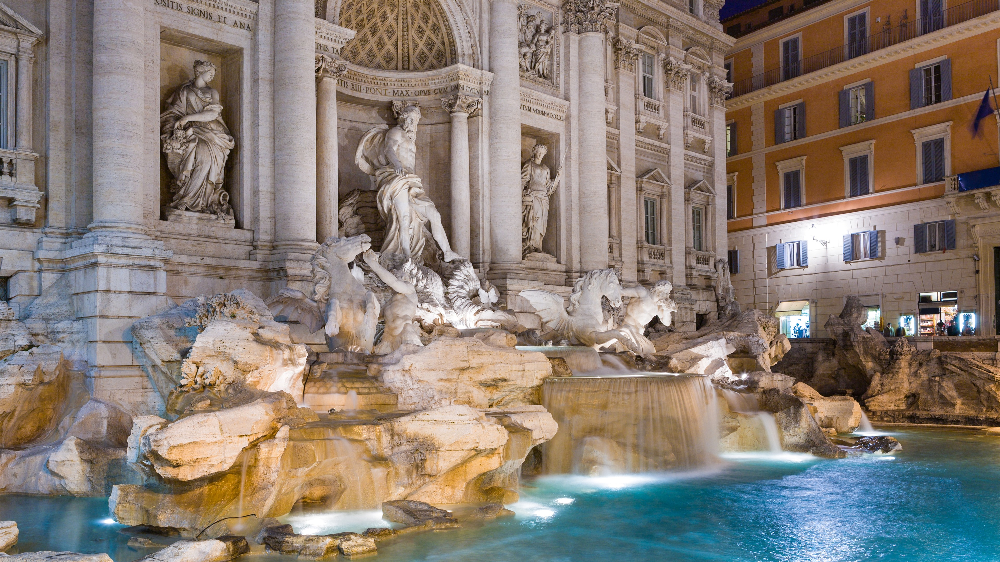
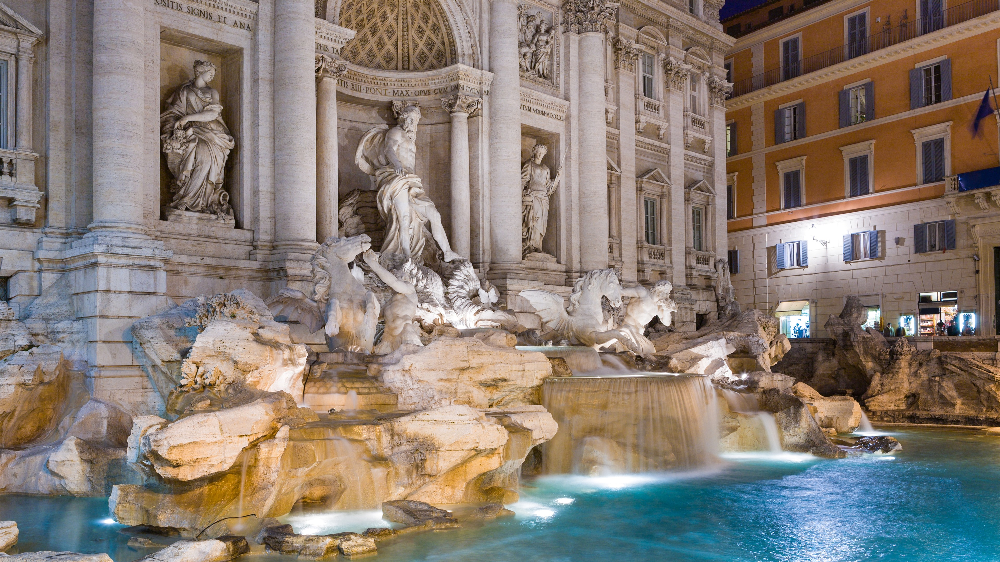

ROMA

3 DIAS EN ROMA - 430€
1er Dia. Ciudad del Vaticano.
Admira obras de valor incalculable en las colecciones papales de los Museos Vaticanos y la Capilla Sixtina. Maravíllate ante obras desde la antigüedad a los frescos de Miguel Ángel.
- Entrada al museo y Capilla Sixtina.
- Entrada a la basílica de San Pedro.
2o Dia. Trastevere y tour por la ciudad.
Descubre Roma en un autobús de dos pisos con techo descubierto y visita los principales lugares de la ciudad. Visita el Vaticano, la plaza de España, el Coliseo, el Foro Romano y más con tu ticket de 24, 48 o 72 horas y paradas ilimitadas.
- Te recogerán directamente en tu alojamiento.
3er Dia. Coliseo, Foro y monte Palatino
Sumérgete en el pasado en este tour guiado con un experto local profesional. Adéntrate en la historia antigua romana y visita el símbolo de Roma, el glorioso Coliseo.
 
